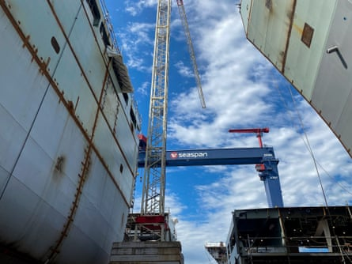

F or millennia, a mass of sea ice in the high Arctic has changed with the seasons, casting off its outer layer in summer and expanding in winter as it spins between Russia, Canada and Alaska. Known as the Beaufort Gyre, this fluke of geography and oceanography was once a proving ground for ice to “mature” into icebergs.
But no more. A rapidly changing climate has reshaped the region, reducing perennial sea ice. As ocean currents spin what is left of the gyre, chunks of ice now clog many of the channels separating the northern islands.
Canada’s coast guard has an expression for this confounding phenomenon: less ice means more ice.
“Most people think climate change means that you won’t need heavy icebreakers,” said Robert Huebert, an Arctic security expert at the University of Calgary. “And the experience of the coast guard is: no, you need far more icebreakers.”
To address the problem, Canada is building a new fleet of ships to fight through the once-impenetrable sea ice. It is not alone, with the prospect of new shipping routes opening up – and with them access to critical minerals in the Arctic – Russia, China and the United States are also rushing to build new icebreakers.
‘A one-off floating city’
At Seaspan’s shipyards in north Vancouver, bound on one side by ocean and the other by mountains, teams have started cutting steel for the Arpatuuq – a 520ft ship that will operate in temperatures near -50C (-58F). The project is expected to take at least five years to complete and cost C$3.15bn ($2.32bn).
When finished, the heavy icebreaker will be the centrepiece of Canada’s recently announced national shipbuilding strategy that looks to further entrench its presence in the Arctic – and distance itself from decades of delay, bureaucratic fumbling and broken promises.
The challenge of building an icebreaker is that the end result must operate in some of the most inhospitable places on Earth with little risk of failure, experts say.
“Shipbuilding is one of the older industries, but it’s still it’s one of the last industries to perfect, because the reality is, you’re building a one-off floating city,” said Eddie Schehr, the company’s vice-president of production. Walking through the hangar-like “shops” where pieces are gradually welded with the aim of eventually crafting a hull, he likens the complex assembly to a costly, often error-ridden form of Lego. “And so it’s often not until the very, very end that you find problems. And you will find them.”
Even the supposedly simpler parts require steel that often measures 60mm thick and requires special machinery to stress-test.
“Because of the strength and capabilities the ships needs to have, it’s twice the thickness and really, twice the ship,” he said. “You have to operate and think at a whole different level.”
Delay and demand
The Arpatuuq will be a class 2 icebreaker, meaning it can operate year-round and push through ice as tall as 10ft. The last time Canada built a similar vessel domestically was in the 1960s and that ship, the Louis St Laurent, still remains the larger of Canada’s only two heavy icebreakers.
Canada first announced it would replace Louis St Laurent in 1985 , but those plans were scuttled. It wasn’t until 2008, when the prime minister, Stephen Harper, announced his government would build another replacement: a heavy icebreaker called the John G Diefenbaker. It too was never built, but Schehr recalls studying plans for the boat in university.
“Time’s a big circle. Now I’m here and we’re now actually finally building that very ship,” said Schehr. “It just has a different name now, [the Arpatuuq].”
At Seaspan’s shipyards in north Vancouver, teams have started construction for the Arpatuuq, a 520ft ship.Photograph: Leyland Cecco
For sceptics, Seaspan can point to the Naalak Nappaaluk, an offshore oceanographic science vessel it recently finished that can operate in ice nearly 4ft thick and is tasked with “identifying the true impact of climate change” when out at sea, says Schehr.
Canada’s federal government has also commissioned another company, Quebec’s Davie shipyards, to build a second icebreaker, framing the decision as one that reflects the gravity of the moment: large icebreakers, incredibly slow to produce, are needed fast.
In 2024, Davie purchased a shipyard in Helsinki. And in mid-June, the company also purchased a shipyard in the US, part of an effort to bring future production down south as a way around restrictive American legislation that prohibits foreign companies from building ships.
“If we were building two icebreakers and two shipyards, that’s the surest way to make it inefficiently,” said Huebert. “The coast guard is going to have to train on two different ships. And for the next 50 years, there will be little commonality in repairs and parts. If you asked me what is the most expensive and inefficient way of building more than one vessel, just look to Canada and its icebreakers.”
Internally, Canada’s historic inability to marshal the resources to build a new ship has become both a running joke and embarrassment. But the recently signed Ice Pact , a tripartite agreement between the Finland, Canada and the United States, could shift global production as Canada looks to revive its shipbuilding industry.
Finland has already built 80% of the world’s ice-capable ships operating in frigid waters. But the deal, announced during the Nato summit in Washington, will see as many as 90 icebreaker ships produced in the coming years, by the three countries. Both Seaspan and Davie hope to be a supplier to the US Coast Guard in coming years if they can successfully produce a heavy icebreaker.
The race for dominance
Russia is believed to have at least 50 icebreakers and more than a dozen can operate in the harshest climates. China probably has four that are suitable for the Arctic ice, though which seasons it can operate in is unclear.
Donald Trump has signalled he wants as many as 40 icebreakers, suggesting allied Arctic nations are entering an arms race for the ships.
Shipping experts say the president’s interest in a fleet of icebreakers reflects a fervour in the multibillion-dollar shipping industry: clearing the North-West Passage of ice for more of the year could year could trim weeks off of shipping times between Europe and Asia.
But it’s not just about money. In recent months, Canada’s federal government has pledged significant investment for the Arctic in a show of military force.
“We see the centrality of the Arctic for the Russians, and as the Russians become a much more aggressive state, the importance of that capability becomes much more clear,” he said. “But if you’re building icebreakers for sovereignty, it starts going beyond the icebreakers. Now you need to invest in satellite, radar and submarines. They’re all part of a system. Icebreakers alone aren’t enough.”
Some are sceptical that the push for new icebreakers reflects a burgeoning arms race.
“We need Canadian government ships that can operate in the Canadian Arctic when there is other shipping there. There is no question about that,” said Michael Byers, a professor of political science at the University of British Columbia. “But politicians and pundits often escalate the concern: ‘Oh my God, the Russians are coming,’ or ‘The Chinese are coming.’ I see no evidence of that. The Russians already own half of the Arctic. They don’t need any more.”
Byers notes that Russia has a different, larger coastline it needs to maintain for year-round shipping, necessitating more ice-worthy vessels.
Instead, Byers points to a reality in which more ships clamour for Arctic passage. “With less ice in the Arctic, it actually becomes more challenging and risky.”
When ships moving in open water encounter gale-force conditions and cold air temperatures, ocean spray can freeze on to the vessels and in some cases, accumulate so much it capsizes them.
“We’ll always need icebreakers because the Arctic will always remain a dangerous place. And that’s why we will always need the Canadian government to make or buy these ships.”